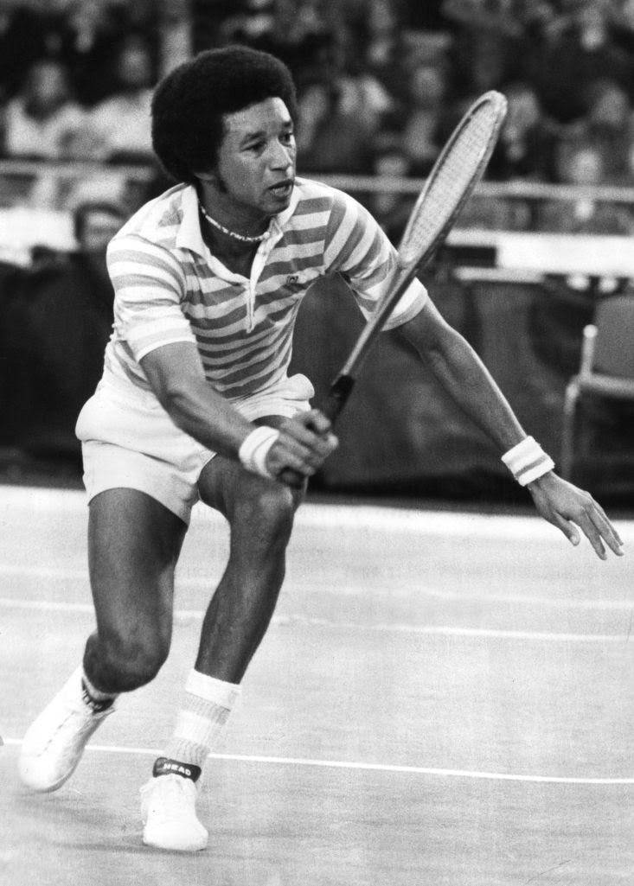

Arthur Ashe

One of the Greatest Tennis Players Ever
Ashe was the first black player selected to the United States Davis Cup team and the only black man ever to win the singles title at Wimbledon, the US Open, and the Australian Open. He retired in 1980. He was ranked world No. 1 by Harry Hopman in 1968 and by Lance Tingay of The Daily Telegraph and World Tennis Magazine in 1975. In the ATP computer rankings, he peaked at No. 2 in May 1976.